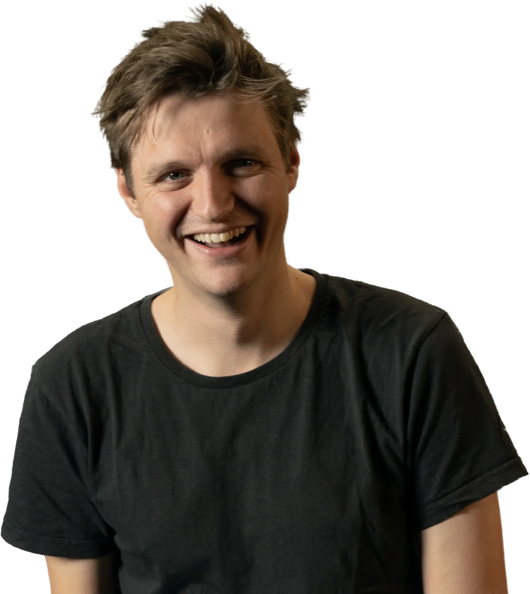
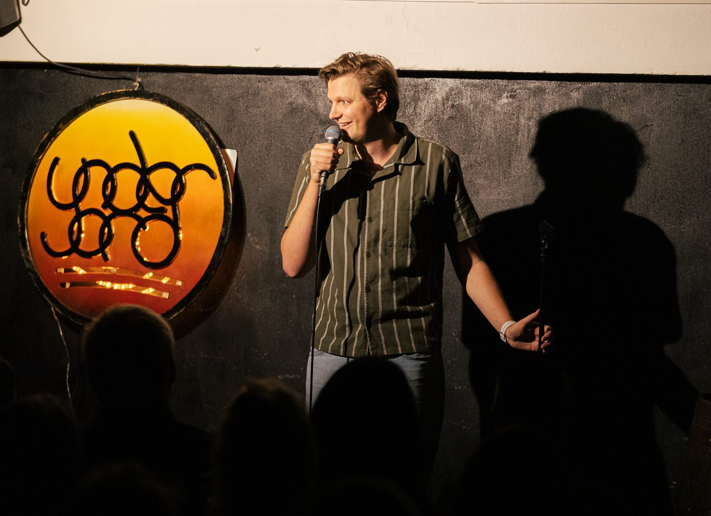
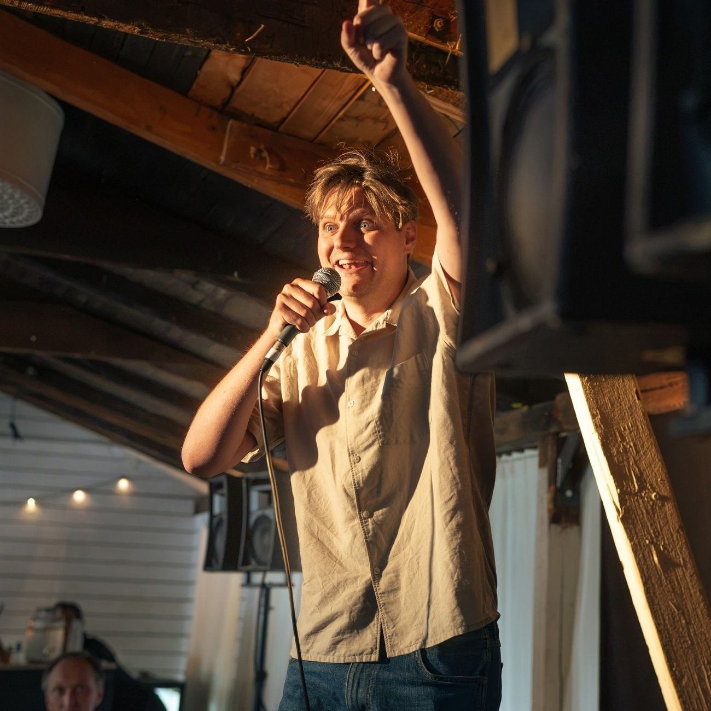
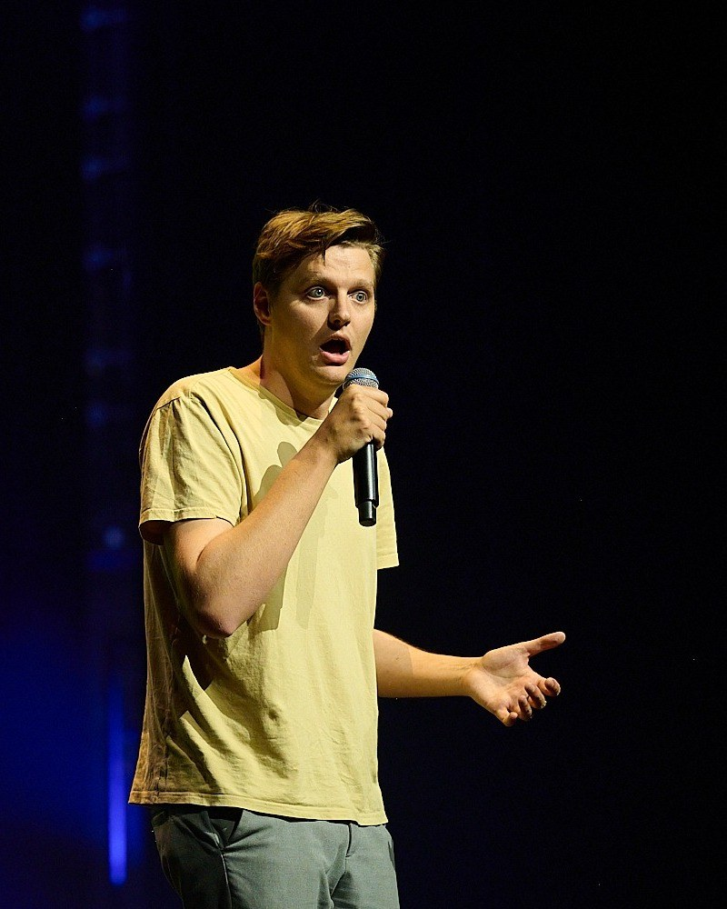
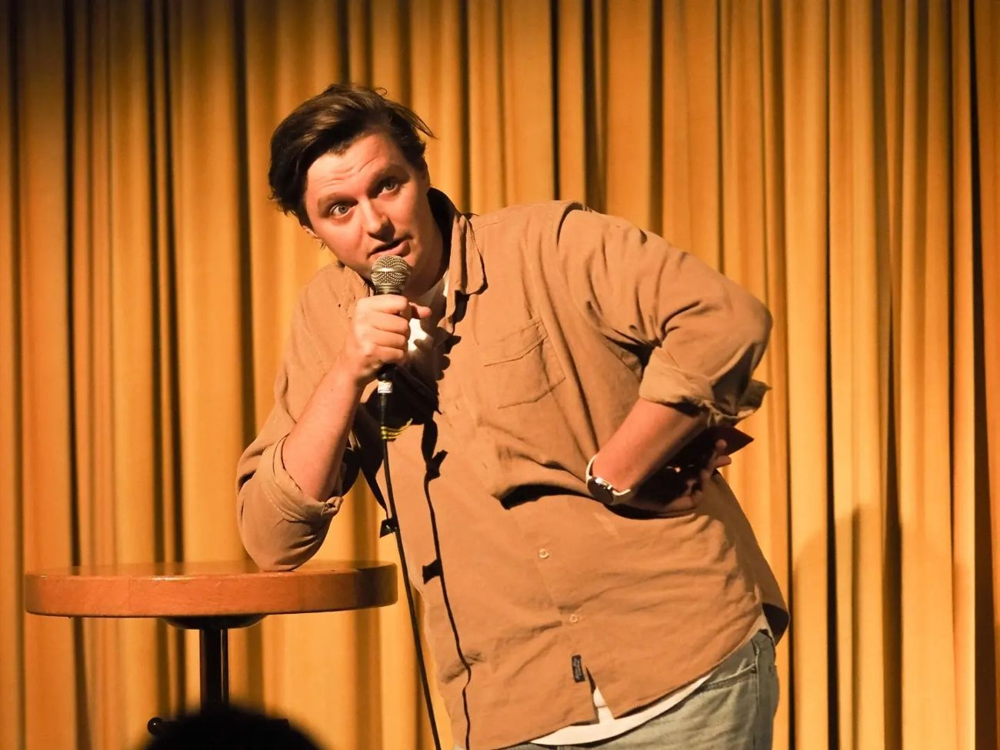
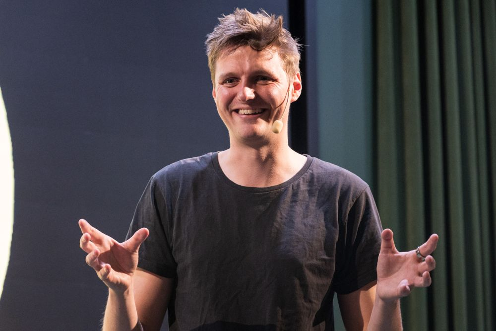
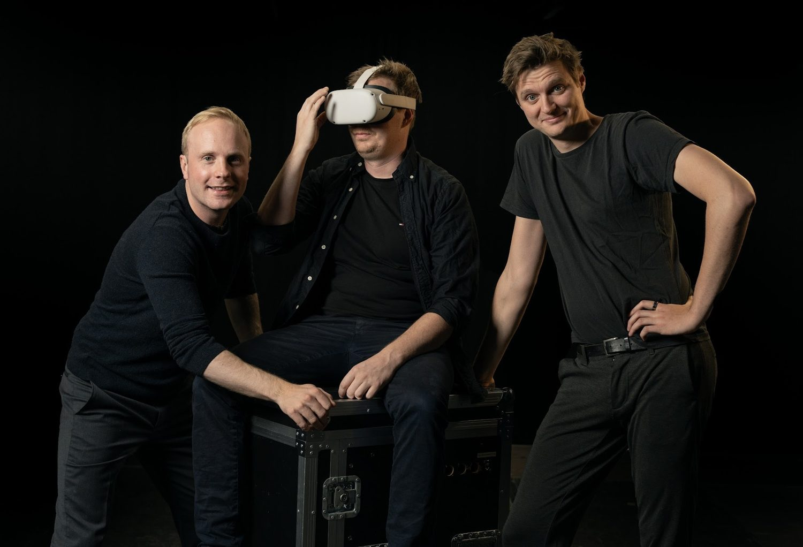
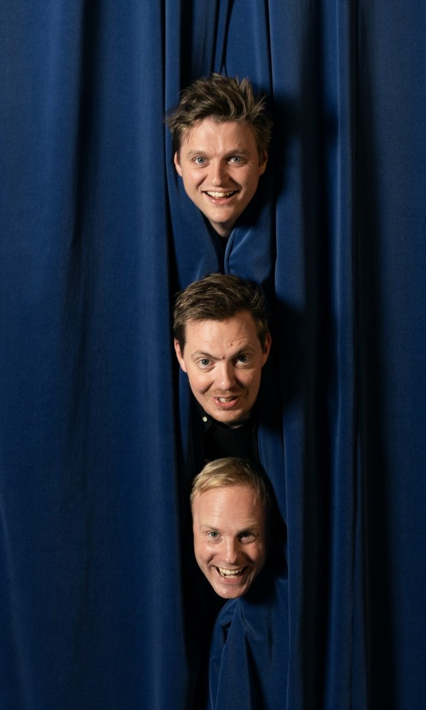
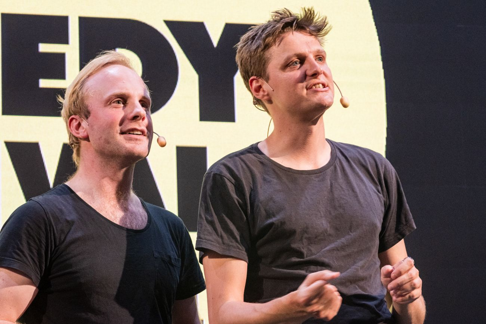

Viktor Sturesson
Komiker. Standup, konferencier och en hel del annat.

Standup
På scen i hela Sverige
Viktor har uppträtt på scener över hela landet, bland annat Raw Comedy Club, Under Jord och Oslipat. 2025 vann han Grand Comedy Slam på Lund Comedy Festival, Sveriges största tävling i standup.
Han uppträder på klubbar, fester och företagsevent.




Konferencier & toastmaster
Håller i trådarna
Viktor är konferencier och toastmaster på företagsevent, fester och bröllop. Han är med redan i planeringen: lägger upp programmet, hittar formen för kvällen och ser till att allt hänger ihop. På plats håller han tiden och tar hand om det som inte går enligt plan.
”Hela arrangemanget var bland det bästa jag varit på, jag gillade hela upplägget och den känslan som alla fick.”
Axis Communications, om Software Summit
Vill ni ha något extra till kvällen kan Viktor också hålla i ett quiz.

Mer
AI AI Kapten
En interaktiv komediföreställning av och med Viktor Sturesson, Pontus Weibull och Martin "Bibbi" Persson. Publiken ger förslag, en AI skriver manus på plats och ensemblen spelar upp resultatet, med mycket improvisation.
Har spelats ett flertal gånger, bland annat på Lund Comedy Festival, som julspecial på Grand Hotel och som middagsunderhållning på företagskonferenser.
”Vi uppskattade deras fenomenala improvisation och när de dessutom petade in lite mjukvarulingo från vår värld drog de hem de största skratten. Rekommenderas!”
Annika, chef på teknikbolag i Lund


